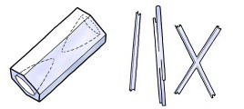

Needles are formed at the upper end of the temperature spectrum, usuallywhen ground temperatures are at or near the freezing point. To grow,these crystals need an air temperature in the -5 to -10 degreesC range. Needles tend to produce a dense, stiff snow pack which can producean avalanche under the right conditions.
